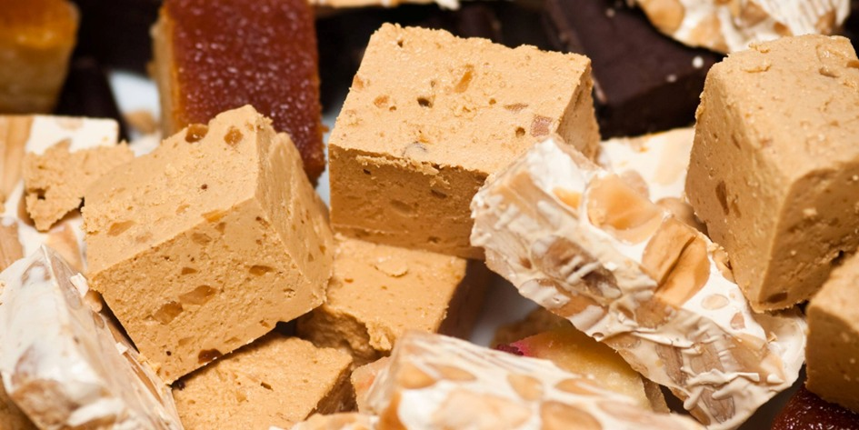
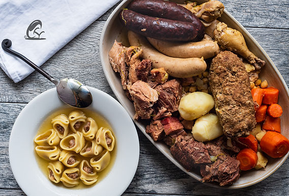
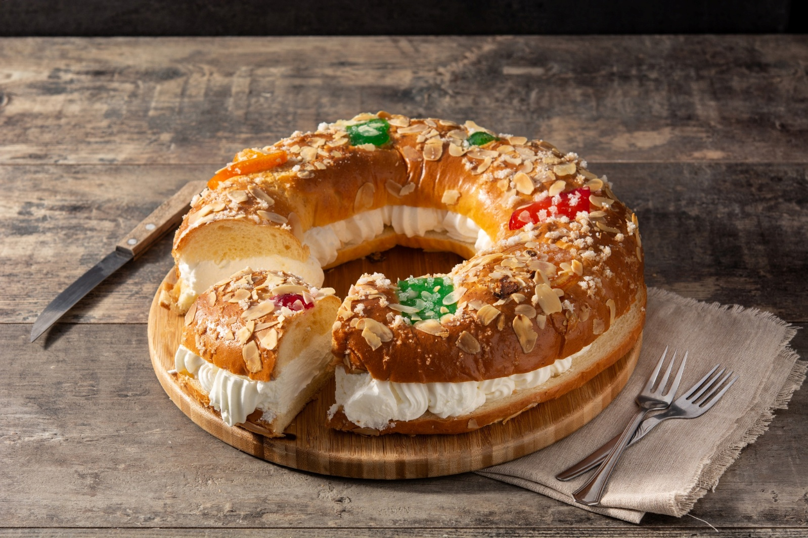

aneb katalánské Vánoce na talíři
Po letech strávených v Katalánsku člověk pochopí, že místní Vánoce se odehrávají hlavně u stolu. Nejde o to, kolik kdo upeče druhů cukroví, ale jak dlouho se u jídla sedí a s kým.
Katalánské vánoční menu má jasná pravidla, která se příliš nemění. A právě díky tomu funguje už po staletí.
Je ale i důkazem, že tradice se dají udržovat i bez stresu a nekonečného pečení. Stačí vědět, co má na vánočním stole skutečně své místo. Katalánské ženy totiž nemusí péct žádné cukroví -- a vůbec jim to nevadí.
Vánoční stoly ovládají TORRONS, sladkost, která má blíž ke středověku než ke kuchařce našich babiček.
Základní recept je jednoduchý a přitom geniální: mandle, med, cukr a bílek.
Historicky torrons pocházejí z oblasti Středomoří a jejich výroba je spojována s arabským vlivem ve středověkém Španělsku.
Nejslavnější jsou varianty Jijona (měkký, krémový) a Alicante (tvrdý s celými mandlemi), ale v Katalánsku se vyrábějí i místní verze, například v Agramuntu.
Dnes existují torrons s čokoládou, pistáciemi, alkoholem nebo dokonce se solí -- tradice se tu rozhodně nebojí inovací.
Zatímco sladké se jí celé svátky, hlavním jídlem Štědrého dne je ESCUDELLA I CARN D´OLLA.
Jde o sytou polévku, která připomíná naši silnou vývarovou klasiku, ale v katalánském měřítku. Největší pozornost budí GALETS -- obří mušlovité těstoviny, do kterých by se klidně vešla polovina lžíce.
Vývar se vaří z několika druhů masa, zeleniny a klobás a má zasytit celou rodinu na dlouhé hodiny.
Nejde o lehké jídlo, ale o symbol hojnosti a společného stolování.
Sladký vrchol Vánoc ale přichází až se svátkem Tří králů v podobě ROSCÓ DE REIS.
Je to kruhový koláč je zdobený kandovaným ovocem a uvnitř skrývá dvě překvapení.
Figurka znamená, že se stáváte králem dne, fazole naopak rozhoduje o tom, kdo zaplatí koláč příště.
A ne, na věk ani výmluvy se nehraje:-)



